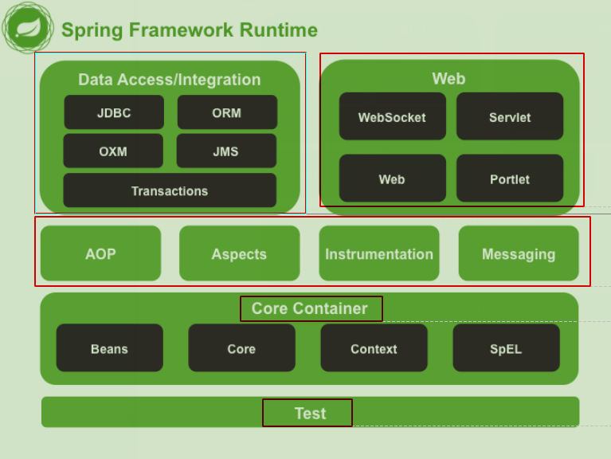

1、spring的概述
spring是什么
Spring是分层的JavaSE/EE应用full-stack轻量级开源框架，以Ioc（Inverse Of Control反转控制）和AOP（Aspect Oriented Programming面向切面编程）为内核，提供了展现层SpringMVC和持久层Spring JDBC以及业务层事务管理等众多的企业级应用技术，还能整合开源世界众多著名的第三方框架和类库，逐渐成为使用最多的JavaEE企业应用开源框架。
spring的两大核心
反转控制Ioc和面向切面编程AOP
spring的发展历程和优势
spring就是为了不使用EJB（Enterprise Java Bean，Oracle公司）而产生
spring优势：
方便解耦，简化开发（前两天）
AOP编程的支持（第三天）
声明式事务的支持（xml配置，第四天）
方便程序的测试（第二天）
方便集成各种优秀框架
降低JavaEE API的使用难度
spring体系结构

2、程序的耦合及解耦
传统jdbc方式
/**
* @author fangjie
* @version 1.0
* @date 2020/2/14 11:37
* @description 程序的耦合
* 耦合：程序间的依赖关系
* 包括：
* 1.类之间的依赖
* 2.方法间的依赖
* 解耦：
* 降低程序间的依赖关系
* 实际开发中，应该做到：
* 编译期不依赖，运行时才依赖
* 解耦思路：
* 第一步：创建对象时，使用反射来创建对象，而避免使用new关键字
* 第二部：读取配置文件来获取要创建对象的全限定类名
*/
public class demo1 {
public static void main(String[] args) throws SQLException, ClassNotFoundException {
/**
* @Description:
* 1.注册驱动
* 2.获取连接
* 3.获取操作数据库的预处理对象（SQL语句）
* 4.执行SQL，得到结果表
* 5.遍历结果集
* 6.释放资源
* @Param: [args]
* @return: void
*/
//1.注册驱动
// DriverManager.registerDriver(new com.mysql.jdbc.Driver());//编译器直接导入包，传统方式
// Class.forName("com.mysql.jdbc.Driver");//改进后方式
//2.获取连接
Connection conn = DriverManager.getConnection("jdbc:mysql://localhost:3306/db2","root","1234");
//3.获取操作数据库的预处理对象
PreparedStatement statement = conn.prepareStatement("select * from account");
//4.执行SQL，得到结果集
ResultSet resultSet = statement.executeQuery();
//5.遍历结果集
while(resultSet.next()){
System.out.println(resultSet.getString("name"));
}
//6.释放资源
resultSet.close();
statement.close();
conn.close();
}
}
这种方式的缺陷：


类直接依赖数据库的具体驱动类（com.mysql.jdbc.Driver()），构成了编译器依赖（如果没有该类，编译将不能通过）
改进：通过反射来注册驱动，此时只需要全限定类名即可
Class.forName("com.mysql.jdbc.Driver");//改进后方式
这种方式的缺陷：
全限定类名写死在代码中，还是不能动态调整
工厂模式解耦
工厂模式
还能保证获取的对象都是单例


bean.properties
accountService = com.itheima.service.impl.AccountServiceImpl
accountDao = com.itheima.dao.impl.AccountDaoImpl
/**
* @author fangjie
* @version 1.0
* @date 2020/2/14 12:32
* @description 创建Bean对象的工厂
*
* Bean：在计算机英语中，有可重用组件的含义
* JavaBean: 用java语言编写的可用组件
* javaBean>实体类
* 他就是创建service和dao对象的
*
* 步骤：
* 第一个：需要一个配置文件来配置我们的service和dao，配置内容为：唯一标识=全限定类名（key=value
* 第二个：通过读取配置文件中配置的内容，反射创建对象
*
* 我们的配置文件可以使xml，也可以是properties
*/
public class BeanFactory {
//定义一个Properties对象
private static Properties props;
//定义一个Map，用于存放我们要创建的对象，我们把它称为容器
private static Map<String,Object> beans;
//使用静态代码块为Properties对象赋值
static {
try {
//实例化对象
props = new Properties();
//使用类加载器获取properties文件的流对象
InputStream in = BeanFactory.class.getClassLoader().getResourceAsStream("bean.properties");
props.load(in);
//实例化容器
beans = new HashMap<String, Object>();
//去除配置文件中所有的Key
Enumeration keys = props.keys();
while (keys.hasMoreElements()) {
//去除每个key
String key = keys.nextElement().toString();
//根据key获取value
String beanPath = props.getProperty(key);
//反射创建对象
Object value = Class.forName(beanPath).newInstance();
//把key和value存入容器
beans.put(key,value);
}
} catch (Exception e) {
throw new ExceptionInInitializerError("初始化properties失败");
}
}
/**
* 根据bean的名称获取bean对象
* @param beanName
* @return
*/
public static Object getBean(String beanName){
return beans.get(beanName);
}
/* public static Object getBean(String beanName){
Object bean = null;
try {
String beanPath = props.getProperty(beanName);
bean = Class.forName(beanPath).newInstance();
} catch (ClassNotFoundException e) {
e.printStackTrace();
} catch (IllegalAccessException e) {
e.printStackTrace();
} catch (InstantiationException e) {
e.printStackTrace();
}
return bean;
}*/
}
3、IOC概念和spring中的IOC
IOC概念：
定义：把创建对象的权利交给框架
通俗：向工厂申请，有工厂查找或创建再返回的这种被动接受方式就是控制反转
IOC的作用：
消减计算机程序的耦合（解除代码中的依赖关系）
spring中基于XML的IOC环境搭建
步骤1：准备spring开发包

步骤2：pom导入依赖
<packaging>jar</packaging>
<dependencies>
<dependency>
<groupId>org.springframework</groupId>
<artifactId>spring-context</artifactId>
<version>5.1.6.RELEASE</version>
</dependency>
</dependencies>
依赖树说明：

步骤3：创建xml配置文件（文件名可以自定义），导入spring框架的约束
<?xml version="1.0" encoding="UTF-8"?>
<beans xmlns="http://www.springframework.org/schema/beans"
xmlns:xsi="http://www.w3.org/2001/XMLSchema-instance"
xsi:schemaLocation="http://www.springframework.org/schema/beans
http://www.springframework.org/schema/beans/spring-beans.xsd">
</beans>

步骤4：让spring管理资源（将需要重用的bean放入其中）
该框架其实就是帮助我们省去了根据配置反射生成bean的过程

步骤5：获取bean
/**
* @author fangjie
* @version 1.0
* @date 2020/2/14 12:20
* @description 模拟表现层，用于调用业务层
*/
public class Client {
/**
* 获取spring的Ioc核心容器，并根据id获取对象
*
* ApplicationContext的三个常用实现类
* ClassPathXmlApplicationContext，它可以加载类路径下的配置文件(相比任意路径更常用
* FileSystemXmlApplicationContext，它可以加载磁盘任意路径下的配置文件（必须有访问权限
* AnnotationConfigApplicationContext，它用于读取注解创建文件
*
* 核心容器的两个接口引发的两个问题：
* ApplicationContext（单例模式下适用，实际上采用此接口:
* 在构建容器时，创建对象的策略是采用立即加载的方式。（只要一读取完配置文件，立即创建配置文件中的配置对象
* BeanFactory（多例对象适用，BeanFactory是顶层接口，功能较少:
* 在构建容器时，创建对象的策略是采用延迟加载的方式。（什么时候根据id获取对象，什么时候才真正的创建对象
*
* @param args
*/
public static void main(String[] args) {
//1.获取核心容器对象
// ApplicationContext context = new ClassPathXmlApplicationContext("bean.xml");
// ApplicationContext context = new FileSystemXmlApplicationContext("D:\\IdeaProjects\\spring\\day01_eesy_03spring\\src\\main\\resources\\bean.xml");
//2.根据id获取对象
// IAccountService service = (IAccountService)context.getBean("accountService");
// IAccountDao accountDao = context.getBean("accountDao",IAccountDao.class);
// service.saveAccount();
----------------------------------------------------------------------------
Resource resource = new ClassPathResource("bean.xml");
BeanFactory factory = new XmlBeanFactory(resource);
IAccountService service = (IAccountService)factory.getBean("accountService");
IAccountDao accountDao = factory.getBean("accountDao",IAccountDao.class);
service.saveAccount();
System.out.println(service);
System.out.println(accountDao);
}
}
Spring中Ioc的细节
spring工厂的类结构图


BeanFactory和ApplicationContext（常用这个）的区别

Application接口的实现类

IOC中创建bean的三种方式、作用范围、生命周期
<?xml version="1.0" encoding="UTF-8"?>
<beans xmlns="http://www.springframework.org/schema/beans"
xmlns:xsi="http://www.w3.org/2001/XMLSchema-instance"
xsi:schemaLocation="http://www.springframework.org/schema/beans
http://www.springframework.org/schema/beans/spring-beans.xsd">
<!-- 把对象的创建交给spring管理-->
<!-- spring对bean的管理细节
1.创建bean的三种方式
2.bean对象的作用范围
3.bean对象的生命周期
-->
<!-- 创建Bean的三种方式
第一种方式：使用默认构造函数创建
在spring的配置文件中使用bean标签，配以id和class属性之后，且没有其他属性和标签时，
采用的就是默认构造函数创建bean对象，此时如果类中没有默认构造函数，则对象无法创建
-->
<!-- <bean id="accountService" class="com.itheima.service.impl.AccountServiceImpl"/>-->
<!-- 第二种方式：使用普通工厂中的方法创建对象（使用某个类中的方法创建对象，并存入spring容器-->
<!-- <bean id="instanceFactory" class="com.itheima.factory.InstanceFactory"/>-->
<!-- <bean id="accountService" factory-bean="instanceFactory" factory-method="getService"/>-->
<!-- 第三种方式：使用工厂中的静态方法创建对象（使用某个类中的静态方法创建对象，并存入spring容器-->
<!-- <bean id="accountService" class="com.itheima.factory.InstanceFactory" factory-method="getService"/>-->
<!-- bean的作用范围
bean标签的scope属性：
作用：用于指定bean的作用范围
取值（常用的就是单例和多例的）：
singleton：单例（默认值
prototype：多例
request：作用于web应用的请求范围
session：作用于web应用的会话范围
global-session：作用于集群环境的会话范围（全局会话范围），当不是集群环境时，它就是session
-->
<!-- <bean id="accountService" class="com.itheima.service.impl.AccountServiceImpl" scope="singleton"/>-->
<!-- bean的生命周期
单例对象
出生：当容器创建时，对象出生
活着：容器还在，对象一直或者
死亡：容器销毁，对象死亡
总结：单例对象的生命周期和容器相同
多例对象
出生：当使用对象时，spring框架创建
活着：对象在使用过程中，一直或者
死亡：当对象长时间不用，且没有其他对象引用时，由Java垃圾回收机制回收
-->
<bean id="accountService" class="com.itheima.service.impl.AccountServiceImpl"
scope="singleton" init-method="init" destroy-method="destory"/>
</beans>
Bean创建的第二、三种方式说明：
这两种方式是针对创建jar包中bean对象而设计


global-session的作用：当服务器为集群环境时，session对象必须为所有服务器共享

4、依赖注入（Dependency Injection）：
注入的三种方式：
构造函数注入（xml）、set方法注入 （xml）、注解
注入的数据类型：
- 基本数据类型和String类型
- bean类型
- 复杂类型（数组与列表|集合与字典）
<?xml version="1.0" encoding="UTF-8"?>
<beans xmlns="http://www.springframework.org/schema/beans"
xmlns:xsi="http://www.w3.org/2001/XMLSchema-instance"
xsi:schemaLocation="http://www.springframework.org/schema/beans
http://www.springframework.org/schema/beans/spring-beans.xsd">
<!-- spring中的依赖注入
依赖注入：
Dependency Injection
IOC的作用：
降低程序间的耦合（依赖关系）
依赖关系：
当前类需要用到其他类的对象
依赖关系的管理：
通过在配置文件中说明，然后交给spring来维护
依赖关系的维护：
依赖注入
依赖注入：
能注入的数据有三类：
基本数据类型和String
其他bean类型（在配置文件中或者注解配置的bean
复杂类型/集合类型
注入的方式有三种：
1.使用构造函数
2.使用set方法
3.使用注解
-->
<!-- 构造函数注入:
使用的标签：constructor-arg
标签中的属性：
type：用于指定要注入的数据的数据类型，该数据类型也是构造函数中某个或某些参数的类型
index：用于指定要注入的数据给构造函数中指定索引位置的参数赋值。索引位置从0开始
name：用于指定给构造函数中指定名称的参数赋值
==============以上三个用于指定给构造函数中哪个参数赋值==================
value：用于提供基本类型和String类型数据
ref：用于指定其他的bean类型数据。它指的就是在spring的Ioc核心容器中出现过的bean对象
优势：
在获取bean对象时，注入数据是必须的操作，否则无法创建对象成功
弊端：
改变了bean对象的实例化方式，使我们在创建对象时，如果用不到这些数据，也必须提供
-->
<bean id="accountService" class="com.itheima.service.impl.AccountServiceImpl">
<constructor-arg name="name" value="test"/>
<constructor-arg name="age" value="18"/>
<constructor-arg name="birthday" ref="now"/>
</bean>
<!-- 配置一个日期对象-->
<bean id="now" class="java.util.Date"/>
<!-- set方法注入（更常用）：
使用的标签：property
标签中的属性:
name：用于指定给构造函数中指定名称的参数赋值
value：用于提供基本类型和String类型数据
ref：用于指定其他的bean类型数据。它指的就是在spring的Ioc核心容器中出现过的bean对象
优势：
创建对象时没有明确的限制，可以直接使用默认构造函数
弊端：
如果有某个成员必须有值，则获取对象时，有可能set方法没有执行
-->
<bean id="accountService2" class="com.itheima.service.impl.AccountServiceImpl2">
<property name="name" value="test2"/>
基本数据类型和String类型注入
<property name="age" value="21"/>
其他bean类型注入
<property name="birthday" ref="now"/>
</bean>
<!-- 复杂类型的注入/集合类型注入
用于给List结构结合注入的标签：
list array set
用于给map结构集合注入的标签：
map props
结构相同，标签可以互换-->
<bean id="accountService3" class="com.itheima.service.impl.AccountServiceImpl3">
<property name="myStrs">
<array>
<value>AAA</value>
<value>BBB</value>
<value>CCC</value>
<value>DDD</value>
</array>
</property>
<property name="myList">
<list>
<value>AAA</value>
<value>BBB</value>
<value>CCC</value>
<value>DDD</value>
</list>
</property>
<property name="mySet">
<set>
<value>AAA</value>
<value>BBB</value>
<value>CCC</value>
<value>DDD</value>
</set>
</property>
<property name="myMap">
<map>
<entry key="testA">
<value>testA</value>
</entry>
</map>
</property>
<property name="myProps">
<map>
<entry key="testB">
<value>testB</value>
</entry>
</map>
</property>
</bean>
</beans>